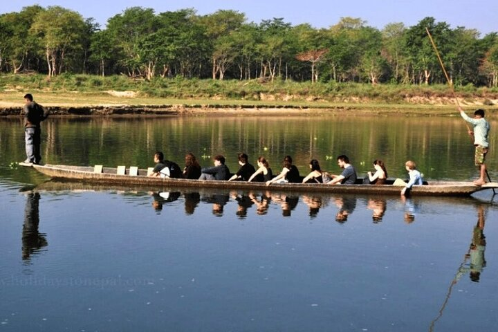
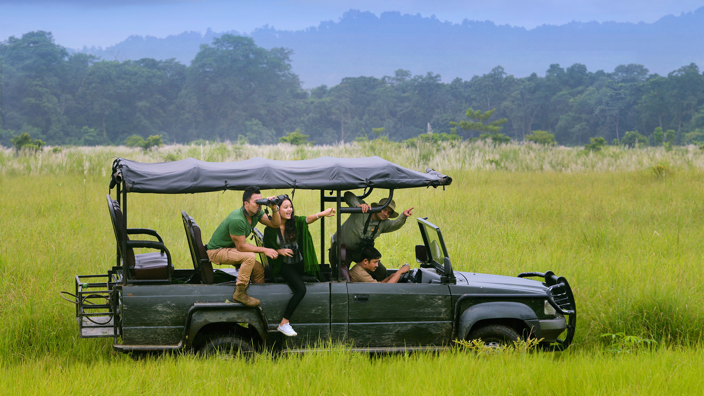
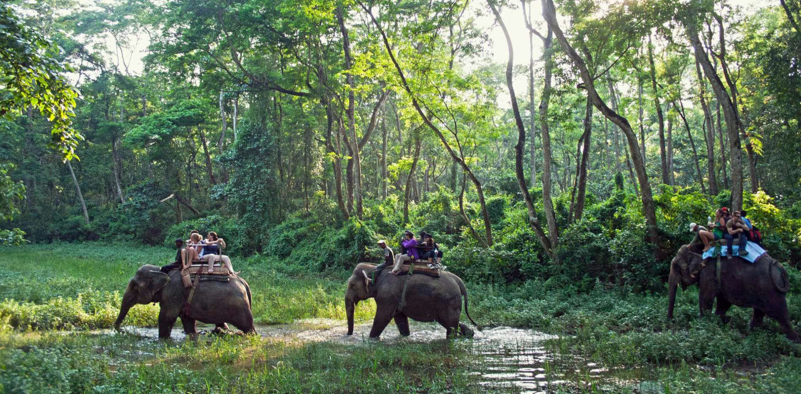
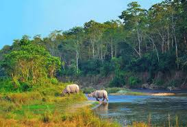
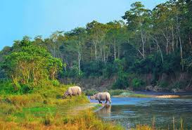

 Going on a safari was an amazing experience! I traveled through the wilderness, surrounded by stunning landscapes and incredible wildlife. I saw animals roaming freely in their natural habitat—majestic elephants, graceful deer, and even powerful tigers. The fresh air and peaceful sounds of nature made the journey even more special. Every turn brought a new sight, whether it was birds soaring in the sky or a hidden animal quietly watching. The safari wasn’t just about spotting animals; it was about feeling connected to nature and enjoying the beauty of the wild.Nepal offers an exciting safari experience, allowing travelers to explore its diverse landscapes and incredible wildlife.
Canoe Safaris
 Going on a safari is an unforgettable adventure where I immerse myself in the wild, witnessing majestic animals in their natural habitat. As I ride through vast landscapes, I take in breathtaking views of open savannas, dense forests, or sprawling grasslands. I feel the excitement build as I spot elephants, lions, rhinos, and other incredible wildlife up close. Each moment on safari is a chance to connect with nature, capture stunning photos, and experience the thrill of exploration.A safari in Nepal is more than just observing animals—it’s an immersive experience into the country's natural beauty and conservation efforts. I get the chance to learn about the local Tharu community, whose traditions are deeply tied to the jungle.
Jeep safari

Beyond wildlife, a safari in Nepal offers a perfect blend of adventure and relaxation. After a day exploring the jungle, I unwind in eco-friendly lodges that provide stunning views and serene environments. I enjoy local Tharu cuisine, share stories around a campfire, and reflect on the wonders I’ve encountered. The experience of being so close to nature while embracing Nepal’s hospitality makes every safari truly special. Whether I seek excitement, tranquility, or a deeper understanding of Nepal’s wilderness, a safari offers all of it. Whether it's spotting a majestic elephant in the early morning mist or watching a crocodile glide silently through the river, the encounters leave lasting impressions on my journey.
Elephant safari
 

canoe safari Horseback safari Elephant safari Jeep safari